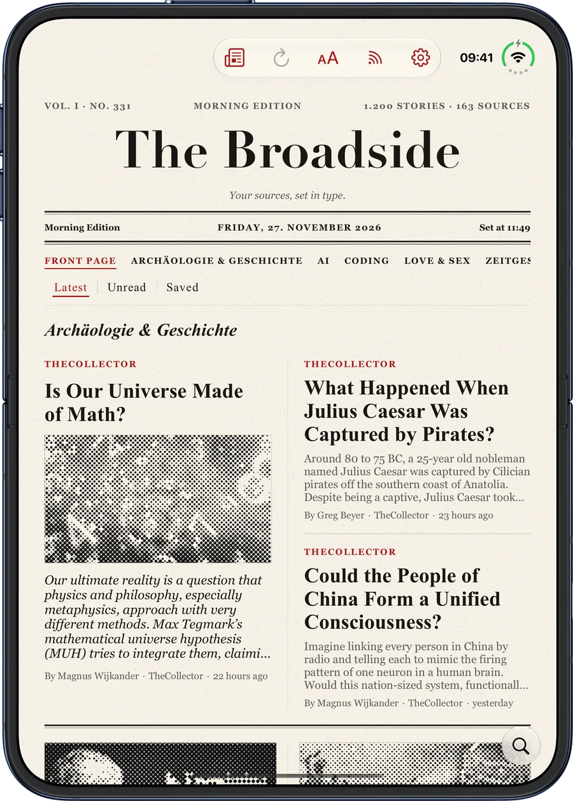
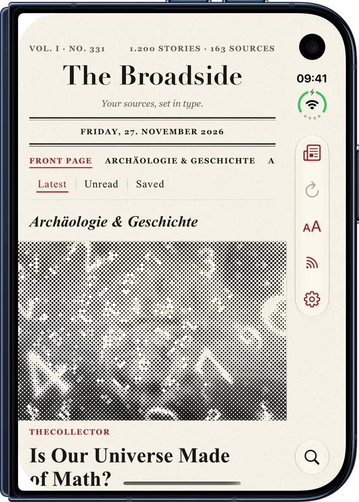
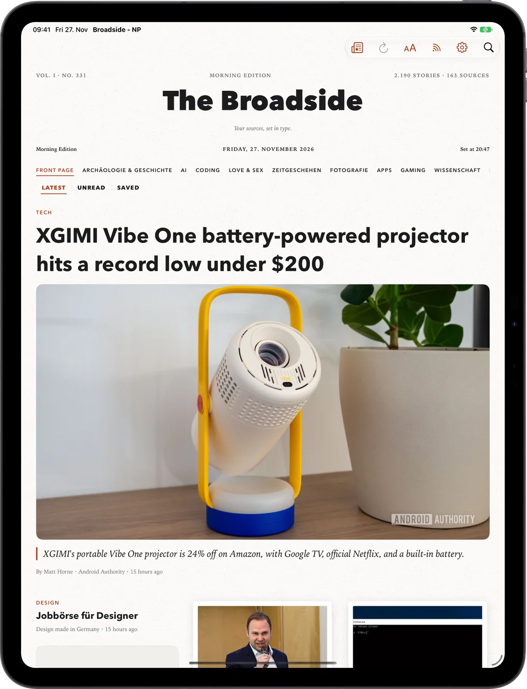

Jede Aktualisierung druckt eine Ausgabe.
Ein Aufmacher mit Bild, eine Spalte mit weiteren Meldungen, ausgewogene Spalten und „Kurz notiert“. Das Layout passt sich an iPhone, iPad, Mac und faltbare Displays an.
FEEDREADER · IPHONE, IPAD & MAC
Broadside druckt die Nachrichten, denen du ohnehin folgst, als ruhige Tageszeitung: ein Aufmacher mit Bild, ausgewogene Spalten und „Kurz notiert“, gesetzt in Serifenschrift auf papierfarbenem Grund.
Bald im App Store
RSS & AtomOhne Konto
OfflineLetzte Ausgabe bleibt
Keine DatenWerden erhoben

WAS IN DER ZEITUNG STEHT
Ein Aufmacher mit Bild, eine Spalte mit weiteren Meldungen, ausgewogene Spalten und „Kurz notiert“. Das Layout passt sich an iPhone, iPad, Mac und faltbare Displays an.
Füge jeden RSS- oder Atom-Feed hinzu oder einfach eine Webadresse, Broadside findet den Feed selbst. Deine Abos ziehen per OPML-Import und -Export mit um.
Deine Ordner werden zu Rubriken, jede Publikation bekommt ihr Ressort, und Neueste, Ungelesen und Gemerkt sind einen Tipp entfernt. Meldungen mehrerer Medien erscheinen einmal, mit „Auch in“.
Echte Rasterpunkt-Bilder oder Schwarzweiß. Mit Plus kommen Vollton, Duoton, Sepia, Stich, Farbraster und Farbe hinzu.
Jeder Stil bringt eigene Schrift, Linien und Seitenlayout mit, von Broadsheet und Night Press bis Tabloid, Swiss und Magazine. Dazu Schriften für Überschriften und Text, fünf Schriftgrößen und eine optionale Papierstruktur.
Eine Zeitung für die Arbeit, eine fürs Wochenende, jede mit eigenem Namen, eigenen Quellen und eigenem Stil, nebeneinander am Kiosk. Meldungen für später landen in Instapaper oder Raindrop.io.
RUHIG GEBAUT
Die letzte Ausgabe bleibt auf deinem Gerät und öffnet sofort, auch offline. Feeds werden direkt von deinem Gerät geladen, ohne Tracking, ohne Analyse und ohne Werbung.
GENAUER HINGESCHAUT
Echte App-Ansichten in Apple-Gerätrahmen, von der Broadsheet-Titelseite bis Night Press für die Spätausgabe.
Seitlich scrollen für alle fünf iPhone-Bilder.





KOSTENLOS LESEN. PLUS FÜR DIE GANZE DRUCKEREI.
Die kostenlose Ausgabe umfasst bis zu fünf Feeds mit dem Stil Broadsheet sowie Raster- und Schwarzweißbilder. Plus öffnet alle Quellen, Stile und ganzen Artikel.
4,99 €pro Monat
19,99 €pro Jahr
39,99 €einmalig, dauerhaft
Preise in Deutschland. Lokale Preise können abweichen. Monats- und Jahresabo mit 7 Tagen gratis für Neukunden; sie verlängern sich automatisch, sofern sie nicht mindestens 24 Stunden vor Ende des Zeitraums gekündigt werden. Der dauerhafte Kauf ist einmalig und verlängert sich nicht.
Immer kostenlos: RSS und Atom, OPML-Import und -Export, Ausgaben offline und bis zu fünf Feeds.
Zur HilfeDATENSCHUTZ VON ANFANG AN
Broadside erhebt keine Daten. Kein Konto, keine Werbung, kein Tracking. Deine Abos, dein Lesestand und die letzte Ausgabe bleiben auf deinem Gerät.
Feeds kommen direkt von den Verlagen. Optionale Konten wie Feedly oder X werden nur mit deiner eigenen Anmeldung angesprochen, die im Schlüsselbund bleibt. Käufe laufen über Apples App Store.
Zur DatenschutzerklärungNein. Füge einen RSS- oder Atom-Feed hinzu oder eine Webadresse. Beim ersten Start bringt dich „Add starter feeds“ sofort in Gang.
Ja. Importiere eine OPML-Datei unter Quellen und exportiere deine Zeitung auf demselben Weg. Mit Plus kannst du außerdem Feedly, The Old Reader, FreshRSS, Miniflux oder Feedbin verbinden.
X ist optional und Teil von Plus. Es braucht die Client ID deiner eigenen X-Entwickler-App und einen X-API-Tarif mit Home-Timeline.
Ja. Die letzte Ausgabe bleibt auf deinem Gerät und öffnet sofort, mit oder ohne Verbindung.
Broadside kommt bald in den App Store, für iPhone, iPad und Mac. Neuigkeiten findest du in der App-Dokumentation.
Bald für iPhone, iPad und Mac.